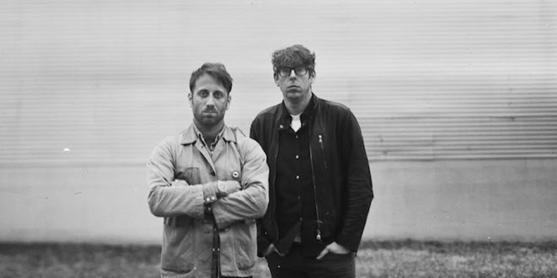

The Black Keys:
- Orign: Akron, OH
- Members: Dan Auerbach, Patrick Carney
- Genre: Indie Rock
The Black Keys is an American rock band formed in Akron, OH, in 2001.
Quotes
- "I heard you threw your man around
Pick him up just to let him down
It is a shame, baby, but I always knew
Just the way you are going to do"
- "There is nothing worse in this world
Than payback from a jealous girl
The laws of man do not apply
When blood gets in a woman's eye"